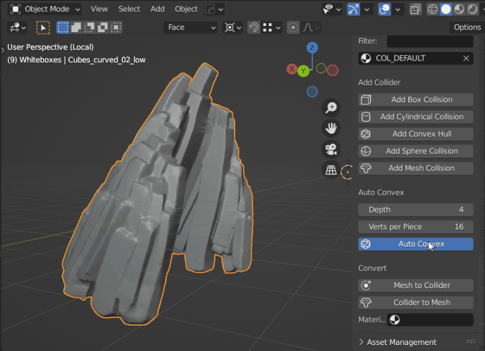

Auto Convex Shape
Auto Convex is a tool for generating convex colliders for complex meshes. It's especially useful for organic shapes like rocks, statues, and debris. While it's not a one-click solution for every asset, it’s a powerful tool for organic models.

Basic Parameters
Control the number of convex hulls and their complexity through these settings, which appear in a popup when you activate Auto Convex:
| Parameter | Description | Default | Range |
|---|---|---|---|
| Shrinkwrap | Shrinkwrap output to source mesh | False | False/True |
| Hulls | Maximum number of output convex hulls | 8 | 1-4096 |
| Verts per Piece | Maximum vertices in the output convex hull | 16 | 8-1024 |
| Voxel Resolution | Total number of voxels used | 100,000 | 100,000-10,000,000 |
These parameters are from the original library used: V-HACD on GitHub.

Advanced Parameters
Advanced parameters can be found in the addon preferences under Auto Convex. Access preferences directly by pressing the gear button next to "Auto Convex."

- Overwrite Executable: Specify a custom V-HACD executable path if needed.
- Temporary Data Path: Set a path to store temporary files like meshes and logs used by V-HACD during collider generation.
Additional advanced settings:
| Parameter | Description | Default | Range |
|---|---|---|---|
| Volume Error Percentage | Allowed volume error percentage. Default is 1%. | 0.01 | 0.001-10 |
| Min Voxel Edge Size | Minimum voxel edge size. | 2.0 | 1.0-32.0 |
| Max Recursion Depth | Maximum recursion depth, determining the maximum number of convex hulls (e.g., depth of 12 results in up to 4,096 hulls). | 4 | 2-64 |
| Fill Mode | Method used to find interior voxels for auto convex creation (Raycast, Flood, Surface). | Raycast | Raycast/Flood/Surface |
| Optimal Split Plane | If true, finds the optimal split plane location. Otherwise, splits hulls in the middle. | False | True/False |
These parameters also come from the V-HACD library.
For detailed documentation on the library, refer to the Voxelized Hierarchical Convex Decomposition - V-HACD version 4.